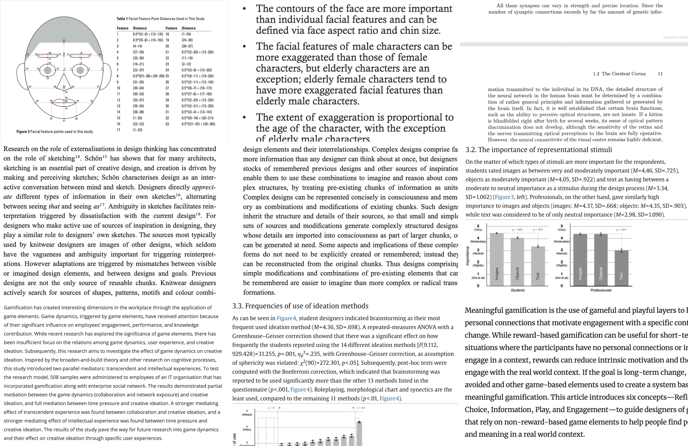
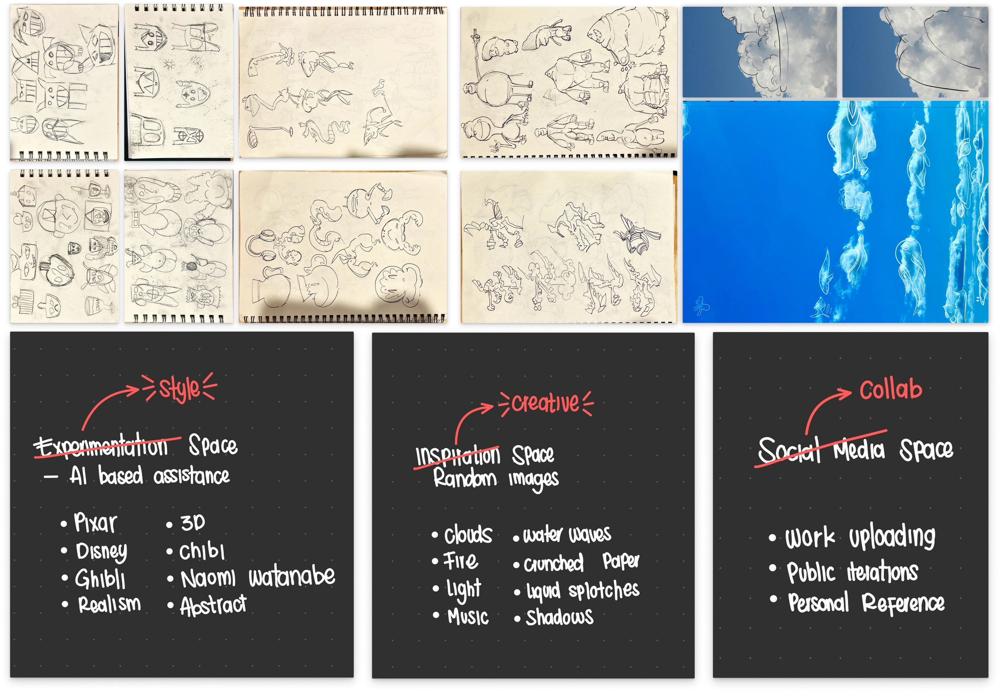
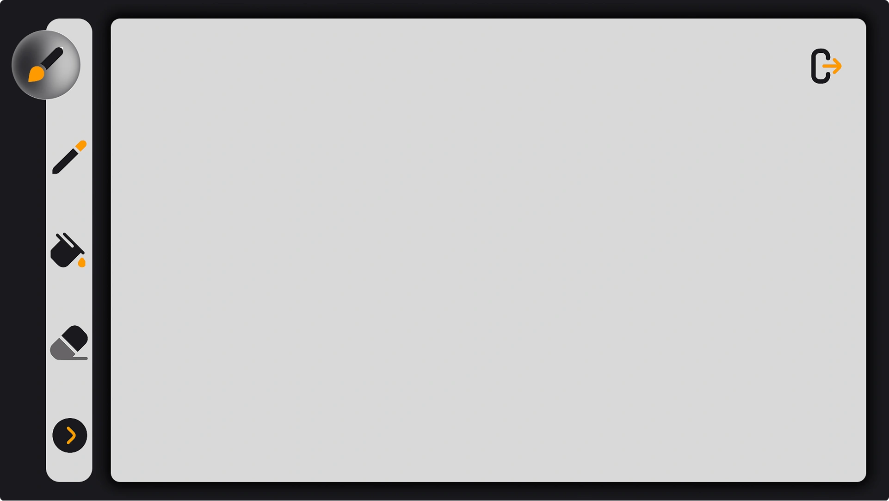
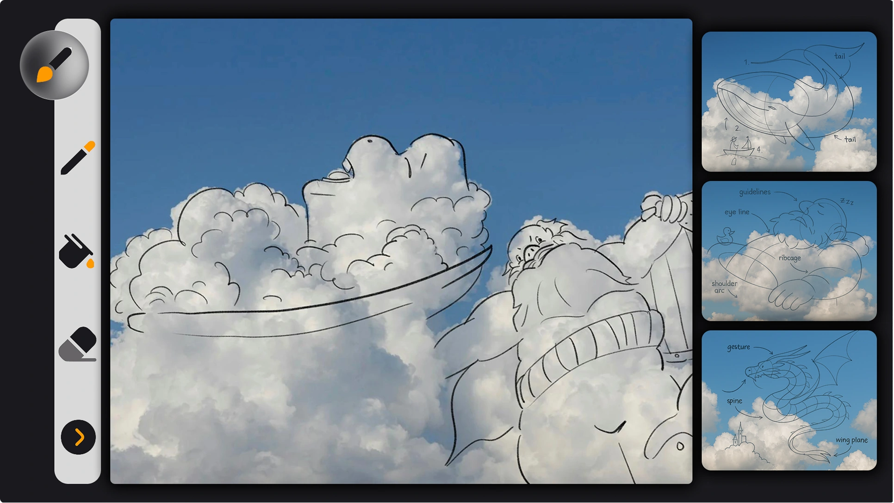
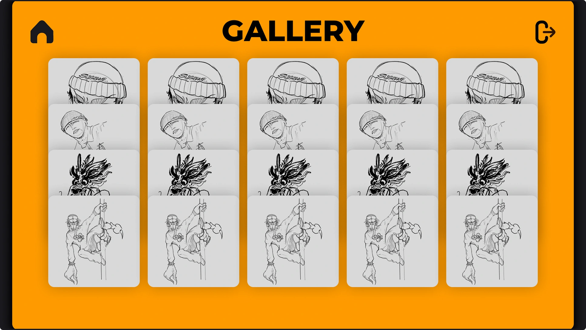
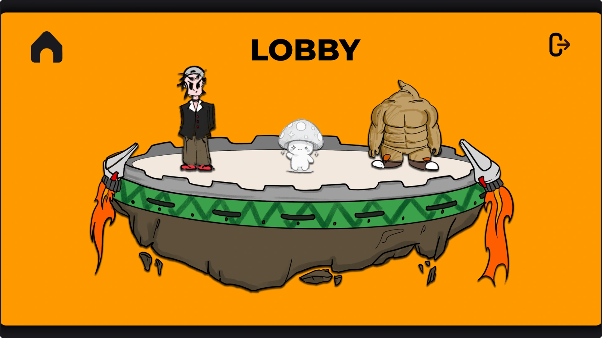
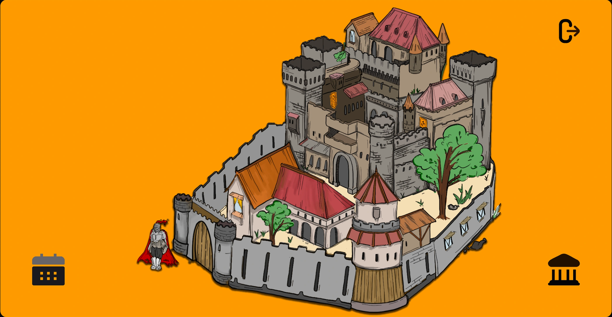

DISEGNO
A personalized website that exhibits self-crafted mini-worlds for drawing enthusiasts.
PROBLEM
People learning to draw outside formal studios often have motivation, references and tools, but lack the structure that turns effort into progress. Practice becomes scattered, feedback is inconsistent, and the blank page can make improvement feel personal rather than procedural. Disegno responds to this gap by creating a repeatable learning environment where artists can build foundations through timed practice, visible progress, remixing and shared feedback. The opportunity was to make drawing feel less isolated and more structured, without removing the freedom that makes people want to draw in the first place.
PROPOSED SOLUTION
Disegno turns drawing practice into a structured digital world where artists can build skill without losing creative freedom. The solution combines timed exercises, progress tracking, remixable prompts and shared feedback into one repeatable learning loop. Instead of treating drawing as a finished outcome, Disegno focuses on the process behind improvement: practice, iteration, reflection and community. Each feature gives self-taught artists a clearer way to start, continue and measure progress, making the blank page feel less intimidating and giving creative growth a place.
PROCESS

We began Disegno by researching how people learn, sketch and stay motivated through creative practice. The research covered facial proportion systems, sketching as a thinking tool, visual stimuli, ideation methods and meaningful gamification. From this, we made a key design decision: Disegno should not simply give users drawing prompts, but create a repeatable practice loop that helps them build skill over time. This shaped features such as timed drawing exercises, progress tracking, remixing and shared feedback, making the platform feel structured without removing creative freedom.

We explored Disegno through sketching, visual references and concept mapping before narrowing the platform's direction. Early ideas moved across style exploration, inspiration gathering and social sharing, but the strongest opportunity was in combining these into one creative practice loop. The key decision was to shift from a loose inspiration space into a structured environment for experimentation, where users could test styles, draw from prompts, share work and learn through iteration. This helped Disegno become less about storing artwork and more about supporting the habits that help artists keep making.
OUTCOME





IMPACT
Improved self-taught artists' ability to start and sustain drawing practice, measured through usability feedback on clarity, motivation and confidence, by designing a structured learning loop that combined timed exercises, repeatable prompts and shared critique.
MY CONTRIBUTION
My contribution to Disegno focused on shaping the learning experience and making the concept feel clear, repeatable and usable. I helped define the core loop of learn, practice, remix and share, then translated it into key features such as timed drawing sprints, progress milestones, portfolio worlds and community feedback. I also worked on the visual direction and interface structure, making sure the platform felt playful without losing clarity. Through iteration and usability feedback, I refined how users move from a blank page into a guided practice flow, keeping the design focused on helping self-taught artists build confidence through structure.
TEAM
- Manu PadmaraagamUI Design Lead
- Hsun-Yu Chang (Jimmy)Graphic Design / Art Lead
- Laura SenasPresentation / Art Lead